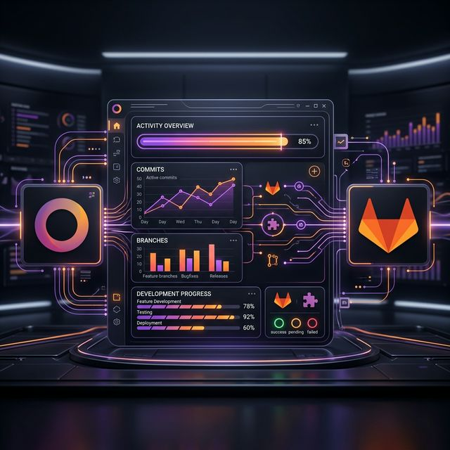

Transform standard projects into high-performance engineering hubs. Seamlessly sync repositories, track every commit, and monitor documentation progress in one unified dashboard.

Connect as many GitLab repositories as you need to a single Odoo project. Unified visibility for complex distributed systems.
Utilize GitLab webhooks to pull push events in real-time. No more manual updates—Odoo knows what happens as it happens.
Keep track of your project's knowledge base. A dedicated documentation progress meter ensures your team stays on top of technical docs.